Most PCB mistakes are found
after
the boards come back.
ClawBoard
An agent that reviews and repairs KiCad boards, live.
OpenClaw
Kimi K3.1 Pro
Cerebras
Cerebras speed
apply_pcb_patch ·
tokens from the model
0.00 s
waiting for the first token…
tokens per second on this call
s
of generation for all
model calls
tokens per second, whole run
The fix lands
before you finish reading the error.
Side by side · same OpenClaw agent, same board, same task
Writing the
-operation patch — each model call replayed in real time
Cerebras
0.00 s
NVIDIA GPU cloud
0.00 s
faster on this call
PASS + PASS
ClawBoard
Catch it before the fab does.
#KimiOnCerebras